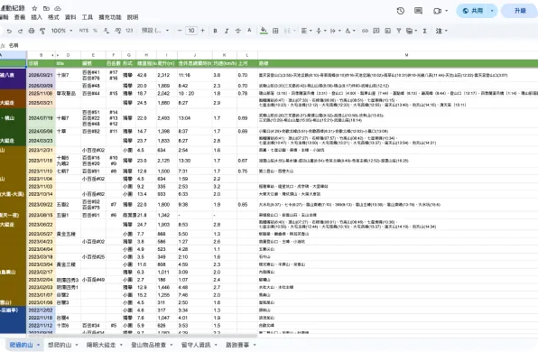
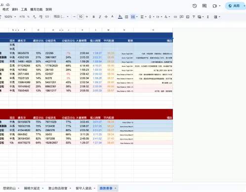
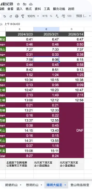
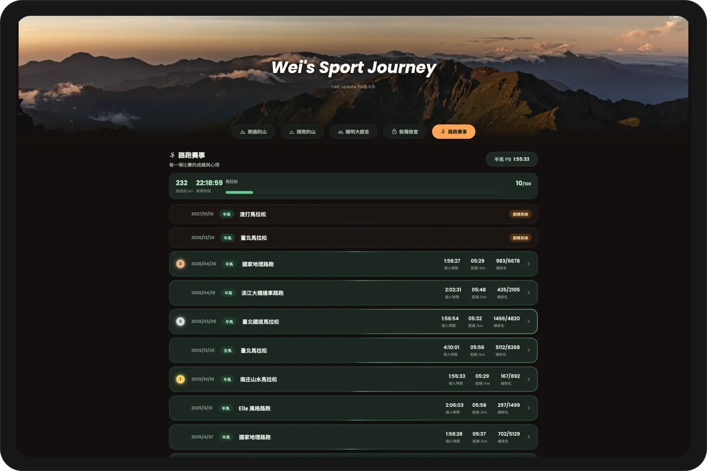
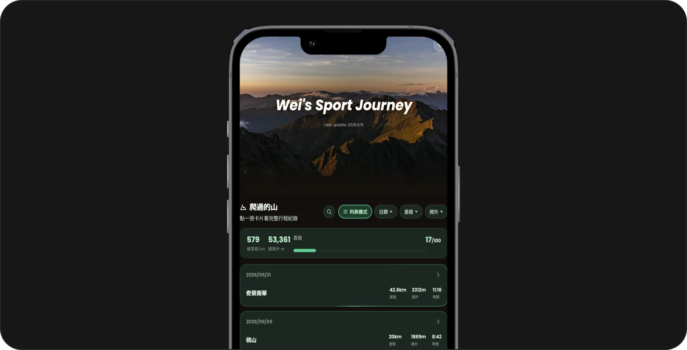
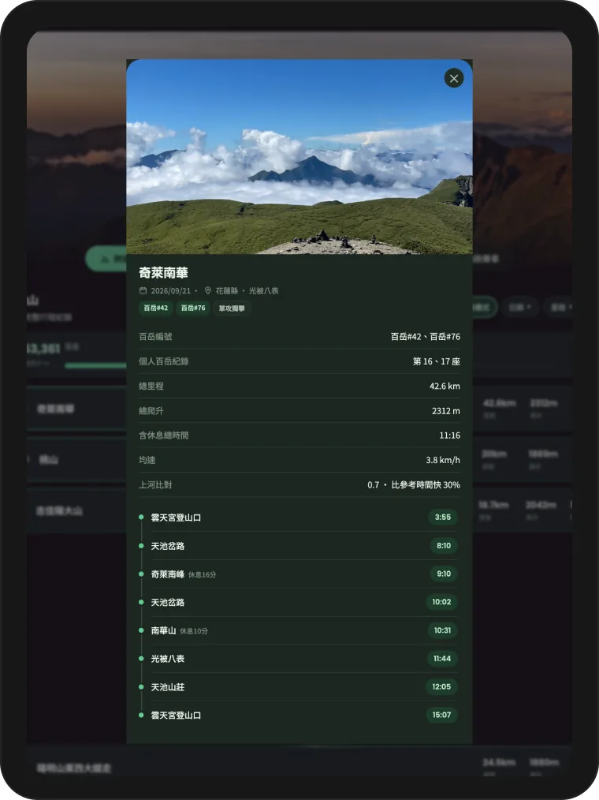
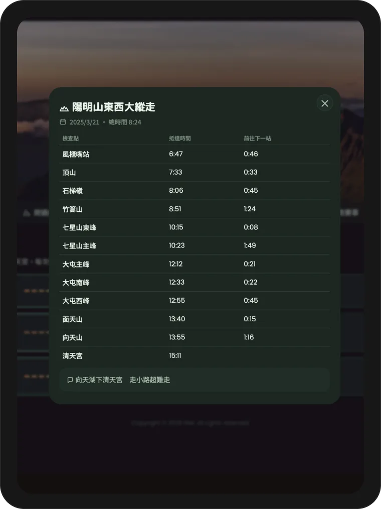

Sport Journey
Outdoor · Trail Record



Problem
爬山一直是我的個人興趣，站在山峰俯瞰美景時心情特別開闊，但高海拔與山林環境本身帶有一定的不確定性與危險性，身體狀態也會隨每次行程持續變化。如果沒有詳細記錄每一次登山的路線變化、時程規劃、補給安排、交通方式與氣候狀況，下一次出發時就很難累積經驗、提高掌握度，過去的軌跡也難以回顧與檢視。

Process
為了系統化保存這些登山紀錄，我先以 Excel 作為數據後台，將每次行程的路線、時程、補給、交通、氣候等資訊結構化整理。接著將這些原始數據轉換成適合網頁呈現的格式，重新設計頁面排版，讓內容不只是資料表格，而是兼具美觀與高可讀性的呈現方式。最後透過 GitHub 搭配 Cloudflare 將成果發布上線，產生一個可以直接分享給朋友的公開連結。

Result
完成後的 Sport Journey 讓每一次登山經驗都能被完整保留下來，路線、時程、補給、交通、氣候等關鍵資訊一目了然，方便自己在規劃下一趟行程時快速回顧過去的軌跡與經驗。同時，公開連結的形式也讓這些登山紀錄能輕鬆分享給朋友，增加交流與參考的價值。


Reflection
這個專案讓我體會到，即使是個人興趣的紀錄，只要透過結構化的數據管理與適當的視覺呈現，就能轉化成有實質幫助的規劃工具。從 Excel 數據後台的整理、格式轉換，到最終透過 GitHub + Cloudflare 完成公開發布，我也實際走過一次「資料 → 視覺化 → 部署分享」的完整流程，累積了資料整合與網頁部署的實作能力。